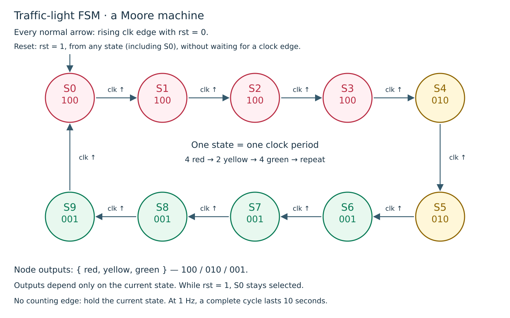
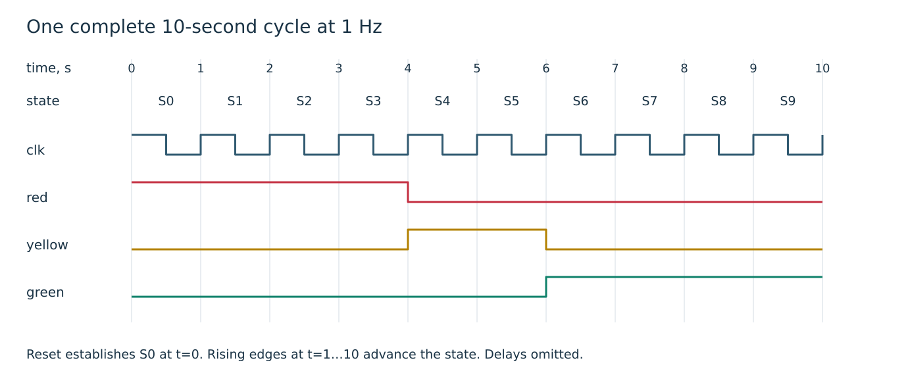
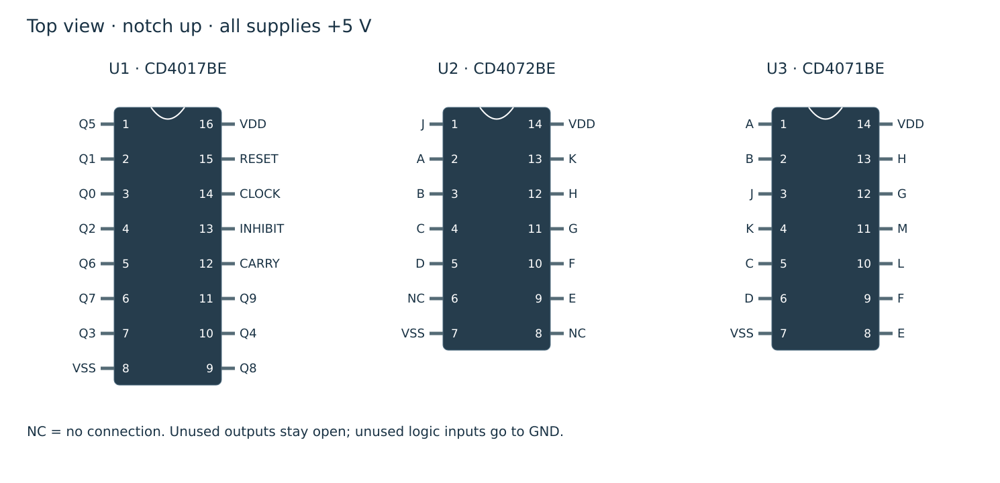
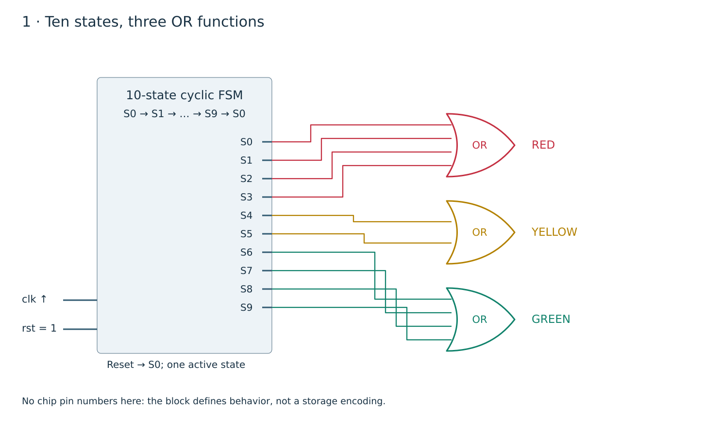
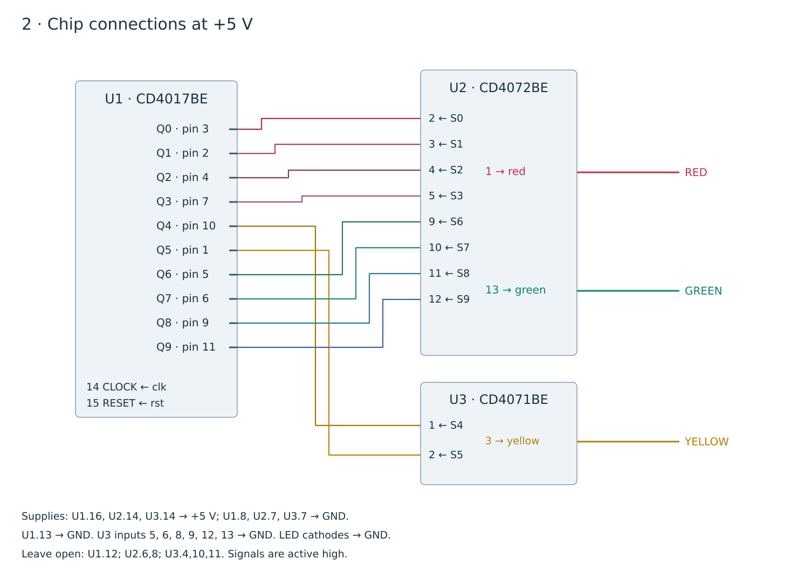
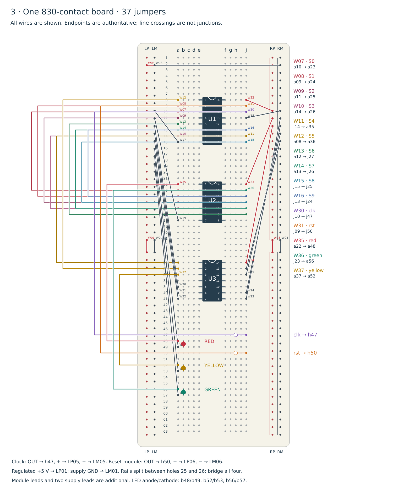
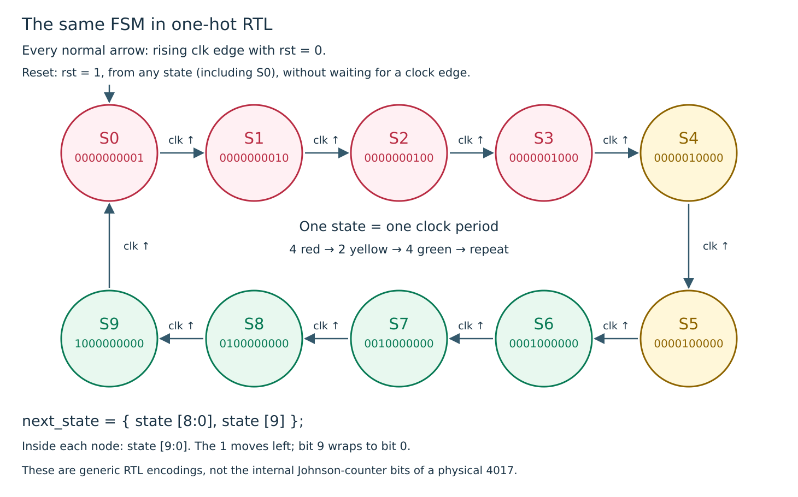

1. Exercise BB-FSM-01 · Timofei’s traffic light
A traffic light is a useful first finite state machine (FSM): the outputs depend on a stored state, and each clock edge advances that state. Here the repeating sequence is red → yellow → green → red. Red occupies four states, yellow two and green four.
This follows Timofei Nikiforov’s idea described in Yuri Panchul’s course. The same “state register + output decoding” structure appears in peripheral controllers, protocol sequencers and processor control logic. This exercise teaches the link between a breadboard circuit and synthesizable RTL.
Prerequisites: breadboard power rails, reading DIP pin numbers, OR gates and clock edges. The supplied circuit is a teaching sequence; intersection coordination and pedestrian inputs are outside this exercise.
2. The state machine and OR logic



The ten circles are ten distinct states, even when several light the same lamp. For example, S0 and S3 both produce red, but their next states differ. Reset selects S0 from any state and holds it while rst is high. The arrow conditions assume rst=0.
S0 → S1 → S2 → S3 → S4 → S5 → S6 → S7 → S8 → S9 → S0
red = S0 | S1 | S2 | S3
yellow = S4 | S5
green = S6 | S7 | S8 | S9S0–S9 are names of states and decoded signals, not chip pin numbers. At a settled state exactly one S signal is high. The source’s “outputs 1–4, 5–6, 7–10” uses one-based counting; this lesson consistently uses the datasheet’s Q0–Q9 naming.
| State | U1 output / pin | red | yellow | green | Next on clk ↑ |
|---|---|---|---|---|---|
| S0 | Q0 / 3 | 1 | 0 | 0 | S1 |
| S1 | Q1 / 2 | 1 | 0 | 0 | S2 |
| S2 | Q2 / 4 | 1 | 0 | 0 | S3 |
| S3 | Q3 / 7 | 1 | 0 | 0 | S4 |
| S4 | Q4 / 10 | 0 | 1 | 0 | S5 |
| S5 | Q5 / 1 | 0 | 1 | 0 | S6 |
| S6 | Q6 / 5 | 0 | 0 | 1 | S7 |
| S7 | Q7 / 6 | 0 | 0 | 1 | S8 |
| S8 | Q8 / 9 | 0 | 0 | 1 | S9 |
| S9 | Q9 / 11 | 0 | 0 | 1 | S0 |
A two-input OR produces 1 when either input is 1:
| A | B | A | B |
|---|---|---|
| 0 | 0 | 0 |
| 0 | 1 | 1 |
| 1 | 0 | 1 |
| 1 | 1 | 1 |
For a four-input OR, 0000 gives 0; each of the other fifteen input combinations gives 1. Reset is asynchronous and active high: it selects S0 immediately, even between clock edges. Normal counting uses rising clock edges only.



At clock frequency f, the durations are 4/f, 2/f and 4/f seconds. The diagram places reset at t=0 and the first counting edge at t=1 s. Releasing a real asynchronous reset at an arbitrary time can shorten the first red interval; complete subsequent cycles still have the 4/2/4 ratio.
Try the state sequence
This browser animation illustrates logical states; it is not the HDL simulator or an electrical model.
3. Parts you need
| Ref. | Part | Qty | Purpose | LSSK row |
|---|---|---|---|---|
| U1 | CD4017BE · DIP-16 | 1 | Decade counter, ten decoded outputs | 37 |
| U2 | CD4072BE · DIP-14 | 1 | Two 4-input OR gates: red and green | 21 |
| U3 | CD4071BE · DIP-14 | 1 | One 2-input OR for yellow; three gates unused | 20 |
| LED-R | 5 V LED | 1 | Red, with built-in current limiting | 46 |
| LED-Y | 5 V LED | 1 | Yellow, with built-in current limiting | 48 |
| LED-G | 5 V LED | 1 | Green, with built-in current limiting | 47 |
| CLK | 555 clock module | 1 | Ready assembled; adjust to approximately 1 Hz | 54 |
| RESET | Button module | 1 | Qualified 5 V module: OUT=0 released, OUT=1 pressed; built-in pull-down | 65 |
| BB | 830-contact breadboard | 1 | One board, central trench and four power rails | 45 |
| PSU | 5 V regulated power module | 1 | Select 5 V; use its supported USB input or the listed 9 V input supply | 56 |
| W | M–M leads | 39 | 37 board jumpers plus two supply leads; obtain a 40-pack | 70 |
| M | M–F leads | 6 | Three each for CLK and RESET, with fitted male headers | 71 |
Rows refer to the local LSSK snapshot from 14 October 2026. The live Google sheet was unavailable during this update. Quantities are components actually used; the reset-button purchasing lot contains five units. The supply module needs a compatible input cable/source; this is additional to the 39 M–M leads. A ready regulated classroom 5 V supply can replace the module.
4. CMOS chips: functions, pins and polarity
U1 CD4017BE: cycles through Q0…Q9. CLOCK pin 14 advances on a rising edge when INHIBIT pin 13 is low. RESET pin 15 is high-active and overrides counting. Pin 12 is a carry output, high in S0…S4 and low in S5…S9; it is unused here.
The second clock input has an important detail: lowering INHIBIT while CLOCK is high also advances the counter. We tie INHIBIT permanently to GND. The chip model and its unit test cover this behavior; the lesson’s top-level interface needs only clk and rst. TI reference; 4017-family clock truth table.
U2 CD4072BE: two four-input OR gates. Inputs 2,3,4,5 → output 1 (red); inputs 9,10,11,12 → output 13 (green). U3 CD4071BE: four two-input OR gates. Inputs 1,2 → output 3 (yellow). All logic outputs used here are active high. TI OR-gate datasheet.



U1 · CD4017BE
| Pin | Chip signal | This circuit |
|---|---|---|
| 1 | Q5 | S5 |
| 2 | Q1 | S1 |
| 3 | Q0 | S0 |
| 4 | Q2 | S2 |
| 5 | Q6 | S6 |
| 6 | Q7 | S7 |
| 7 | Q3 | S3 |
| 8 | VSS | Tie to 0 V |
| 9 | Q8 | S8 |
| 10 | Q4 | S4 |
| 11 | Q9 | S9 |
| 12 | CARRY | Leave open |
| 13 | INHIBIT | Tie to 0 V |
| 14 | CLOCK | clk |
| 15 | RESET | rst |
| 16 | VDD | Supply +5 V |
U2 · CD4072BE
| Pin | Chip signal | This circuit |
|---|---|---|
| 1 | J | red |
| 2 | A | S0 |
| 3 | B | S1 |
| 4 | C | S2 |
| 5 | D | S3 |
| 6 | NC | Leave open |
| 7 | VSS | Tie to 0 V |
| 8 | NC | Leave open |
| 9 | E | S6 |
| 10 | F | S7 |
| 11 | G | S8 |
| 12 | H | S9 |
| 13 | K | green |
| 14 | VDD | Supply +5 V |
U3 · CD4071BE
| Pin | Chip signal | This circuit |
|---|---|---|
| 1 | A | S4 |
| 2 | B | S5 |
| 3 | J | yellow |
| 4 | K | Leave open |
| 5 | C | Tie to 0 V |
| 6 | D | Tie to 0 V |
| 7 | VSS | Tie to 0 V |
| 8 | E | Tie to 0 V |
| 9 | F | Tie to 0 V |
| 10 | L | Leave open |
| 11 | M | Leave open |
| 12 | G | Tie to 0 V |
| 13 | H | Tie to 0 V |
| 14 | VDD | Supply +5 V |
Unused logic inputs of U3 (5,6,8,9,12,13) are tied to GND. Its unused outputs (4,10,11) stay open. U2 pins 6 and 8 are physical NC pins; leave them open. Never connect outputs together to implement OR.
5. Schematic 1 · Generic logic



The state graph in section 2 specifies each transition. This is the behavioral structure implemented by traffic_light.sv. The state block specifies a ten-state sequence; it does not require a particular internal encoding.
6. Schematic 2 · Chip connections



red is U2.1, yellow is U3.3, green is U2.13. Connect each to the anode of its corresponding current-limited indicator; connect cathodes to common GND. Clock, reset and supply modules share that ground.
7. Schematic 3 · Breadboard assembly



Insert all DIP packages across the central trench with notches upward: U1 in rows 8–15, U2 in 22–28, U3 in 35–41. Pin 1 occupies column e at the first row; the opposite top pin is in column f. Within a row, a–e are connected and f–j are connected; the two halves are separate.
LP/LM are the left positive/ground rails; RP/RM are the right rails. Rail holes are numbered 01–50 from top to bottom independently of the 63 terminal rows. The drawing assumes a break between rail holes 25 and 26 and bridges all four rails. Inspect the continuity of your actual board before applying this numbering.
| External connection | Board holes |
|---|---|
| CLK: OUT / + / − | h47 / LP05 / LM05 |
| RESET: OUT / + / − | h50 / LP06 / LM06 |
| Supply +5 V / GND | LP01 / LM01 |
| Red LED anode / cathode | b48 / b49 |
| Yellow LED anode / cathode | b52 / b53 |
| Green LED anode / cathode | b56 / b57 |
Complete hole-by-hole wiring checklist (37 jumpers)
| Wire | Net | From | To |
|---|---|---|---|
| W01 | +5V | LP25 | LP26 |
| W02 | GND | LM25 | LM26 |
| W03 | +5V | RP25 | RP26 |
| W04 | GND | RM25 | RM26 |
| W05 | +5V | LP02 | RP02 |
| W06 | GND | LM02 | RM02 |
| W07 | S0 | a10 | a23 |
| W08 | S1 | a09 | a24 |
| W09 | S2 | a11 | a25 |
| W10 | S3 | a14 | a26 |
| W11 | S4 | j14 | a35 |
| W12 | S5 | a08 | a36 |
| W13 | S6 | a12 | j27 |
| W14 | S7 | a13 | j26 |
| W15 | S8 | j15 | j25 |
| W16 | S9 | j13 | j24 |
| W17 | GND | a15 | LM08 |
| W18 | GND | j11 | RM08 |
| W19 | GND | a28 | LM09 |
| W20 | GND | a39 | LM10 |
| W21 | GND | a40 | LM11 |
| W22 | GND | a41 | LM12 |
| W23 | GND | j41 | RM09 |
| W24 | GND | j40 | RM10 |
| W25 | GND | j37 | RM11 |
| W26 | GND | j36 | RM12 |
| W27 | GND | a49 | LM13 |
| W28 | GND | a53 | LM14 |
| W29 | GND | a57 | LM15 |
| W30 | clk | j10 | j47 |
| W31 | rst | j09 | j50 |
| W32 | +5V | j08 | RP08 |
| W33 | +5V | j22 | RP09 |
| W34 | +5V | j35 | RP10 |
| W35 | red | a22 | a48 |
| W36 | green | j23 | a56 |
| W37 | yellow | a37 | a52 |
8. Generic synthesizable SystemVerilog
Coding style used here
Each module starts with timeunit 1ns; and timeprecision 1ps; after its header. Net ports use plain input/output; procedural outputs use output logic. Port names are aligned with spaces.
The RTL, chip models, wrappers and testbenches now follow the documented SystemVerilog style rules derived from BGM and systemverilog-homework. Indentation is four spaces. Registers use logic and always_ff; combinational procedures use always_comb; module connections use explicit port names. The guide records reset and FSM-style differences between the repositories.



Both designs have exactly the same interface: clk, rst → red, yellow, green, state[9:0]. The generic design uses a one-hot state register, so the three equations match schematic 1 directly. Reset is required before normal operation.
Generic RTL — full source
// Synthesizable generic FSM. The state output uses one-hot encoding.
// Reset is asynchronous and active high; it selects S0.
module traffic_light
(
input clk,
input rst,
output red,
output yellow,
output green,
output logic [9:0] state
);
timeunit 1ns;
timeprecision 1ps;
wire [9:0] next_state = { state [8:0], state [9] };
// State register
always_ff @ (posedge clk or posedge rst)
if (rst)
state <= 10'b00_0000_0001;
else
state <= next_state;
// Moore outputs depend only on the current state.
assign red = | state [3:0];
assign yellow = | state [5:4];
assign green = | state [9:6];
endmodule
SystemVerilog describes concurrent hardware: the register remembers a state, while all three output equations are continuously active. The shift concatenation rotates the one-hot marker, not software instructions. The real 4017 uses a five-stage Johnson counter internally; functional equivalence does not require identical internal storage.
9. SystemVerilog models of the CMOS chips
All three models are synthesizable functional models with logical ports named after chip pins. Physical VDD/VSS and NC pins are documented in the diagram, not modeled as HDL power pins. There are no propagation delays. They do not verify LED current, supply quality, metastability or electrical pulse limits.
cd4017b.sv
// Synthesizable, zero-delay functional model of a powered CD4017B.
// Physical supply pins: 16 = VDD, 8 = VSS; they are not HDL ports.
// Binary encoding abstracts the chip's five-stage Johnson counter.
// Reset is required. Illegal Johnson-state recovery and electrical effects
// (current, setup/hold, pulse width and propagation delay) are not modeled.
module cd4017b
(
input p14_clock,
input p13_inhibit,
input p15_reset,
output p3_q0,
output p2_q1,
output p4_q2,
output p7_q3,
output p10_q4,
output p1_q5,
output p5_q6,
output p6_q7,
output p9_q8,
output p11_q9,
output p12_carry
);
timeunit 1ns;
timeprecision 1ps;
// Falling INHIBIT while CLOCK is high is also a count event.
// INHIBIT is tied low in this exercise, so synthesis removes the gate.
// This models the chip; it is not a recommendation to gate FPGA clocks.
wire effective_clock = p14_clock & ~ p13_inhibit;
logic [3:0] count;
always_ff @ (posedge effective_clock or posedge p15_reset)
if (p15_reset)
count <= '0;
else if (count == 4'd9)
count <= '0;
else
count <= count + 1'b1;
assign p3_q0 = (count == 4'd0);
assign p2_q1 = (count == 4'd1);
assign p4_q2 = (count == 4'd2);
assign p7_q3 = (count == 4'd3);
assign p10_q4 = (count == 4'd4);
assign p1_q5 = (count == 4'd5);
assign p5_q6 = (count == 4'd6);
assign p6_q7 = (count == 4'd7);
assign p9_q8 = (count == 4'd8);
assign p11_q9 = (count == 4'd9);
assign p12_carry = (count < 4'd5);
endmodule
cd4072b.sv
// Synthesizable functional model: two four-input OR gates.
// Physical pins: 14 = VDD, 7 = VSS, 6/8 = NC. No electrical/timing model.
module cd4072b
(
input p2_a,
input p3_b,
input p4_c,
input p5_d,
output p1_j,
input p9_e,
input p10_f,
input p11_g,
input p12_h,
output p13_k
);
timeunit 1ns;
timeprecision 1ps;
assign p1_j = p2_a | p3_b | p4_c | p5_d;
assign p13_k = p9_e | p10_f | p11_g | p12_h;
endmodule
cd4071b.sv
// Synthesizable functional model: four two-input OR gates.
// Physical supply pins: 14 = VDD, 7 = VSS. No electrical/timing model.
module cd4071b
(
input p1_a,
input p2_b,
input p5_c,
input p6_d,
input p8_e,
input p9_f,
input p12_g,
input p13_h,
output p3_j,
output p4_k,
output p10_l,
output p11_m
);
timeunit 1ns;
timeprecision 1ps;
assign p3_j = p1_a | p2_b;
assign p4_k = p5_c | p6_d;
assign p10_l = p8_e | p9_f;
assign p11_m = p12_g | p13_h;
endmodule
Both encodings follow the same state graph. The 4017 model uses a binary counter as an abstraction and matches the legal reset/count sequence, including carry and inhibit. It does not implement the physical Johnson counter’s recovery from illegal internal codes. In this exercise inhibit is tied low, allowing synthesis to remove the effective-clock gate.
10. The chip-connected SystemVerilog design
This netlist is generated from the same pin/net database used by schematics 2 and 3. It instantiates one model per physical IC and ties unused logic inputs low. It has the same interface as section 8, so either implementation can replace the other in the testbench or wrappers.
Chip-connected RTL — full source
// Generated by tools/build_diagrams.py from the same pins/nets as the drawings.
// Synthesizable with the ideal chip models; all supply pins are physical-only.
module traffic_light_chips
(
input clk,
input rst,
output red,
output yellow,
output green,
output [9:0] state
);
timeunit 1ns;
timeprecision 1ps;
cd4017b u1
(
.p3_q0 (state [0]),
.p2_q1 (state [1]),
.p4_q2 (state [2]),
.p7_q3 (state [3]),
.p10_q4 (state [4]),
.p1_q5 (state [5]),
.p5_q6 (state [6]),
.p6_q7 (state [7]),
.p9_q8 (state [8]),
.p11_q9 (state [9]),
.p12_carry (),
.p13_inhibit (1'b0),
.p14_clock (clk),
.p15_reset (rst)
);
cd4072b u2
(
.p1_j (red),
.p2_a (state [0]),
.p3_b (state [1]),
.p4_c (state [2]),
.p5_d (state [3]),
.p9_e (state [6]),
.p10_f (state [7]),
.p11_g (state [8]),
.p12_h (state [9]),
.p13_k (green)
);
cd4071b u3
(
.p1_a (state [4]),
.p2_b (state [5]),
.p3_j (yellow),
.p4_k (),
.p5_c (1'b0),
.p6_d (1'b0),
.p8_e (1'b0),
.p9_f (1'b0),
.p10_l (),
.p11_m (),
.p12_g (1'b0),
.p13_h (1'b0)
);
endmodule
11. Testbenches and simulator scripts
The testbench compares both implementations with an independent expected state and expected lamp pattern. Equality alone is insufficient: two wrong designs could agree. Checks cover 12 complete cycles, 285 observations, asynchronous reset at both clock levels, held reset, falling-edge stability and wrap from S9 to S0.
All three benches use a separate free-running clock, event-based stimulus, SystemVerilog task bodies and cycle-counted timeouts. The only falling-edge waits check low-CLOCK behavior; each settling delay is explained in the source and in the style guide timing notes.
Main equivalence testbench
// Simulation only. Portable procedural checks; no classes, DPI or UVM.
module tb_traffic_light;
timeunit 1ns;
timeprecision 1ps;
localparam period = 20;
localparam timeout_cycles = 500;
logic clk = 1'b0;
logic rst = 1'b0;
always # (period / 2) clk = ~ clk;
logic red_generic, yellow_generic, green_generic;
logic red_chips, yellow_chips, green_chips;
logic [9:0] state_generic, state_chips;
int expected = 0;
int checks = 0;
int red_slots = 0;
int yellow_slots = 0;
int green_slots = 0;
int visits [0:9];
traffic_light generic_dut
(
.clk (clk),
.rst (rst),
.red (red_generic),
.yellow (yellow_generic),
.green (green_generic),
.state (state_generic)
);
traffic_light_chips chip_dut
(
.clk (clk),
.rst (rst),
.red (red_chips),
.yellow (yellow_chips),
.green (green_chips),
.state (state_chips)
);
task check_state;
logic [9:0] wanted;
logic [2:0] lamps;
wanted = 10'b1 << expected;
lamps = expected < 4 ? 3'b100 : expected < 6 ? 3'b010 : 3'b001;
if ( state_generic !== wanted
|| state_chips !== wanted
|| { red_generic, yellow_generic, green_generic } !== lamps
|| { red_chips, yellow_chips, green_chips } !== lamps)
begin
$fatal (1, "state=%0d generic=%b/%b chips=%b/%b",
expected,
state_generic, { red_generic, yellow_generic, green_generic },
state_chips, { red_chips, yellow_chips, green_chips });
end
checks = checks + 1;
endtask
task tick;
@ (posedge clk);
expected = rst ? 0 : (expected + 1) % 10;
# 1; // Let register updates and lamp decoding settle before sampling.
check_state ();
endtask
// Called between rising edges, after tick or the focused low-phase check.
// Checking before the next clock edge distinguishes asynchronous reset.
task reset_now;
rst = 1'b1;
expected = 0;
# 1; // Asynchronous register update and combinational output settling.
check_state ();
rst = 1'b0;
endtask
initial
begin
$dumpfile ("traffic_light.vcd");
$dumpvars (0, tb_traffic_light);
for (int i = 0; i < 10; i ++)
visits [i] = 0;
@ (posedge clk);
# 1; // Place the initial reset after the clock event, without a race.
reset_now ();
for (int round = 0; round < 12; round ++)
for (int i = 0; i < 10; i ++)
begin
visits [expected] = visits [expected] + 1;
if (red_generic)
red_slots = red_slots + 1;
if (yellow_generic)
yellow_slots = yellow_slots + 1;
if (green_generic)
green_slots = green_slots + 1;
tick ();
end
if (red_slots != 48 || yellow_slots != 24 || green_slots != 48)
$fatal (1, "4/2/4 duration mismatch");
for (int i = 0; i < 10; i ++)
if (visits [i] != 12)
$fatal (1, "Missing state %0d", i);
// Reset from every state while CLOCK is high, then while it is low.
for (int low_phase = 0; low_phase < 2; low_phase ++)
for (int i = 0; i < 10; i ++)
begin
tick ();
reset_now ();
repeat (i)
tick ();
if (low_phase != 0)
begin
// Necessary exception: exercise reset with CLOCK low and
// verify that a falling clock edge does not advance state.
@ (negedge clk);
# 1; // Observe any erroneous falling-edge state update.
check_state ();
end
reset_now ();
end
rst = 1'b1;
expected = 0;
repeat (3)
tick (); // Reset dominates the clock.
rst = 1'b0;
tick ();
$display ("PASS traffic_light: %0d checks; 12 full cycles; red/yellow/green=48/24/48; reset and wrap",
checks);
$finish;
end
initial
begin
repeat (timeout_cycles) @ (posedge clk);
$fatal (1, "Timeout after %0d clock cycles", timeout_cycles);
end
endmodule
Two additional benches exercise all 256 combinations across the OR-model input pins and the 4017’s inhibit/carry behavior, then both versions of each integration wrapper for 30 steps and both display modes, followed by three disabled cycles and independent button/dedicated reset checks.
Chip-model unit tests
// Simulation only. Chip pin truth tables and 4017 clock semantics.
module tb_cmos;
timeunit 1ns;
timeprecision 1ps;
localparam period = 20;
localparam timeout_cycles = 500;
logic clk = 1'b0;
logic inhibit = 1'b0;
logic rst = 1'b0;
logic [7:0] a = '0;
always # (period / 2) clk = ~ clk;
logic [3:0] or2;
logic [1:0] or4;
logic [9:0] q;
logic carry;
int expected = 0;
cd4071b g2
(
.p1_a (a [0]),
.p2_b (a [1]),
.p5_c (a [2]),
.p6_d (a [3]),
.p8_e (a [4]),
.p9_f (a [5]),
.p12_g (a [6]),
.p13_h (a [7]),
.p3_j (or2 [0]),
.p4_k (or2 [1]),
.p10_l (or2 [2]),
.p11_m (or2 [3])
);
cd4072b g4
(
.p2_a (a [0]),
.p3_b (a [1]),
.p4_c (a [2]),
.p5_d (a [3]),
.p1_j (or4 [0]),
.p9_e (a [4]),
.p10_f (a [5]),
.p11_g (a [6]),
.p12_h (a [7]),
.p13_k (or4 [1])
);
cd4017b counter
(
.p14_clock (clk),
.p13_inhibit (inhibit),
.p15_reset (rst),
.p3_q0 (q [0]),
.p2_q1 (q [1]),
.p4_q2 (q [2]),
.p7_q3 (q [3]),
.p10_q4 (q [4]),
.p1_q5 (q [5]),
.p5_q6 (q [6]),
.p6_q7 (q [7]),
.p9_q8 (q [8]),
.p11_q9 (q [9]),
.p12_carry (carry)
);
task check_counter;
if (q !== (10'b1 << expected) || carry !== (expected < 5))
$fatal (1, "4017 state/carry mismatch: expected=%0d q=%b carry=%b",
expected, q, carry);
endtask
task tick;
@ (posedge clk);
expected = rst ? 0 : inhibit ? expected : (expected + 1) % 10;
# 1; // Counter register and decoded output settling.
check_counter ();
endtask
initial
begin
@ (posedge clk);
# 1; // Assert reset after the clock event, without a stimulus/DUT race.
rst = 1'b1;
expected = 0;
# 1; // Check asynchronous reset before the next clock edge.
check_counter ();
// Inputs are changed after sampling, safely before the next clock edge.
for (int i = 0; i < 256; i ++)
begin
a = 8' (i);
tick ();
if ( or2 !== { (| a [7:6]), (| a [5:4]), (| a [3:2]), (| a [1:0]) }
|| or4 !== { (| a [7:4]), (| a [3:0]) })
$fatal (1, "OR pin truth-table mismatch input=%h", a);
end
rst = 1'b0;
repeat (30)
tick ();
inhibit = 1'b1;
# 1; // Raising inhibit while CLOCK is high must not count.
check_counter ();
repeat (4)
tick ();
// Necessary exception: falling INHIBIT with CLOCK low must not count.
// Posedge-only stimulus cannot test this half of the chip's truth table.
@ (negedge clk);
inhibit = 1'b0;
# 1; // Settle the effective clock and output decode before checking.
check_counter ();
tick ();
inhibit = 1'b1;
# 1; // Raising inhibit with CLOCK high must not count.
check_counter ();
inhibit = 1'b0;
expected = (expected + 1) % 10;
# 1; // Falling inhibit with CLOCK high IS a count event.
check_counter ();
rst = 1'b1;
expected = 0;
# 1; // Reset must act without waiting for the next clock edge.
check_counter ();
inhibit = 1'b1;
tick ();
inhibit = 1'b0;
# 1; // Reset also dominates the falling-INHIBIT count event.
check_counter ();
repeat (2)
tick ();
$display ("PASS CMOS: 256 OR input combinations; 30 count edges; carry, inhibit and asynchronous reset");
$finish;
end
initial
begin
repeat (timeout_cycles) @ (posedge clk);
$fatal (1, "Timeout after %0d clock cycles", timeout_cycles);
end
endmodule
BGM and Tiny Tapeout tests
// Simulation only. Both core versions in all three integration wrappers.
module tb_integrations;
timeunit 1ns;
timeprecision 1ps;
localparam period = 20;
localparam timeout_cycles = 200;
logic clk = 1'b0;
logic rst = 1'b0;
logic ena = 1'b1;
always # (period / 2) clk = ~ clk;
logic [7:0] ui = '0;
logic [7:0] key = '0;
logic [7:0] lab_led [0:1];
logic [7:0] hack_led [0:1];
logic [7:0] tt_out [0:1];
logic [7:0] tt_io [0:1];
logic [7:0] tt_oe [0:1];
int n_bgm = 0;
int n_tt = 0;
logic [7:0] seven [0:9];
generate
genvar k;
for (k = 0; k < 2; k ++)
begin : versions
lab_top # (.CHIP_MODEL (k)) lab
(
.clk (clk),
.slow_clk (clk),
.rst (rst),
.key (key [3:0]),
.sw (8'b0),
.led (lab_led [k]),
.abcdefgh (),
.digit (),
.x (10'b0),
.y (9'b0),
.red (),
.green (),
.blue (),
.mic (24'b0),
.sound (),
.uart_rx (1'b0),
.uart_tx (),
.gpio ()
);
hackathon_top # (.CHIP_MODEL (k)) hack
(
.clock (clk),
.slow_clock (clk),
.reset (rst),
.key (key),
.led (hack_led [k]),
.abcdefgh (),
.digit (),
.x (9'b0),
.y (9'b0),
.red (),
.green (),
.blue (),
.gpio ()
);
tt_um_timofei_traffic_light # (.USE_CHIP_MODEL (k)) tt
(
.ui_in (ui),
.uo_out (tt_out [k]),
.uio_in (8'b0),
.uio_out (tt_io [k]),
.uio_oe (tt_oe [k]),
.ena (ena),
.clk (clk),
.rst_n (~ rst)
);
end
endgenerate
task check_all;
logic [2:0] bgm_lamps;
logic [2:0] tt_lamps;
logic [7:0] segments;
bgm_lamps = n_bgm < 4 ? 3'b001 : n_bgm < 6 ? 3'b010 : 3'b100;
tt_lamps = n_tt < 4 ? 3'b001 : n_tt < 6 ? 3'b010 : 3'b100;
segments = ui [0] ? seven [n_tt] : n_tt < 4 ? 8'h01 : n_tt < 6 ? 8'h40 : 8'h08;
for (int j = 0; j < 2; j ++)
begin
if ( lab_led [j] !== { 5'b0, bgm_lamps }
|| hack_led [j] !== { 5'b0, bgm_lamps })
$fatal (1, "BGM output mismatch state=%0d model=%0d", n_bgm, j);
if ( tt_out [j] !== (ena ? segments : 8'b0)
|| tt_io [j] !== (ena ? { 5'b0, tt_lamps } : 8'b0)
|| tt_oe [j] !== (ena ? 8'h07 : 8'b0))
$fatal (1, "Tiny Tapeout output mismatch state=%0d model=%0d", n_tt, j);
end
endtask
task tick;
@ (posedge clk);
n_bgm = rst || key [0] ? 0 : (n_bgm + 1) % 10;
n_tt = rst ? 0 : (n_tt + 1) % 10;
# 1; // Register updates and wrapper output decoding must settle.
check_all ();
endtask
initial
begin
seven [0] = 8'h3f;
seven [1] = 8'h06;
seven [2] = 8'h5b;
seven [3] = 8'h4f;
seven [4] = 8'h66;
seven [5] = 8'h6d;
seven [6] = 8'h7d;
seven [7] = 8'h07;
seven [8] = 8'h7f;
seven [9] = 8'h6f;
@ (posedge clk);
# 1; // Drive reset after the clock event, without a stimulus/DUT race.
rst = 1'b1;
n_bgm = 0;
n_tt = 0;
# 1; // Asynchronous reset must be observable before the next clock.
check_all ();
rst = 1'b0;
// Each display mode sees all ten states; stimulus changes after sampling.
for (int i = 0; i < 30; i ++)
begin
ui = 8' ((i / 10) % 2);
tick ();
end
// ena blanks TT outputs but must not stop the internal state sequence.
ena = 1'b0;
repeat (3)
tick ();
ena = 1'b1;
# 1; // Combinational output-enable and display settling.
check_all ();
// Check the BGM reset button independently of the dedicated TT reset.
key = 8'd1;
n_bgm = 0;
# 1; // Asynchronous button reset; TT must retain its own state.
check_all ();
repeat (2)
tick ();
key = '0;
tick ();
rst = 1'b1;
n_bgm = 0;
n_tt = 0;
# 1; // Asynchronous dedicated reset in all wrappers.
check_all ();
repeat (2)
tick ();
rst = 1'b0;
tick ();
$display ("PASS integrations: both implementations in BGM lab/hackathon and Tiny Tapeout; 30 steps, both display modes, 3 disabled cycles, independent button and dedicated resets");
$finish;
end
initial
begin
repeat (timeout_cycles) @ (posedge clk);
$fatal (1, "Timeout after %0d clock cycles", timeout_cycles);
end
endmodule
cd breadboard/traffic_light
./scripts/run_icarus.sh
./scripts/run_questa.sh
./scripts/run_verilator.shRun any installed simulator, or all three. Scripts build in separate build/ subdirectories, run all three testbenches and require a PASS line. The main test writes traffic_light.vcd. Tool paths can be overridden with IVERILOG/VVP, VLIB/VMAP/VLOG/VSIM or VERILATOR environment variables.
| Tool | Observed result |
|---|---|
| Icarus 12.0 / 14.0 | Simulation passes. Icarus 13 is the requested portability target; the exact version is not installed here. |
| Questa 2025.2 | All sources compile with zero errors/warnings. Runtime unavailable: simulator license not configured. |
| Verilator 5.053 devel | All three testbenches pass using --binary --timing --trace. |
| Yosys + Slang | Both core designs synthesize and pass check -assert. |
For synthesis, run python3 scripts/check_synthesis.py with a Yosys installation that includes the Slang frontend; set YOSYS to its executable if needed. Both cores pass using the original modern SystemVerilog sources. The local Yosys 0.43 built-in reader rejects timeunit declarations.
The benches use ordinary SystemVerilog-2012 procedural constructs without UVM, DPI or simulator-specific classes. Validation record · Shared runner · Synthesis check. No physical circuit has been tested.
12. Integration with BGM lab_top
Use the BGM slow_clk, not the raw MHz clock. The inspected Tang Nano 9K + LCD + TM1638 board wrapper generates a 1 Hz slow clock. Other board configurations must provide the same rate for seconds-based timing.
traffic_light dut
(
.clk (slow_clk),
.rst (rst | key [0]),
.red (lamp_red),
.yellow (lamp_yellow),
.green (lamp_green),
.state (state)
);
// Or instantiate traffic_light_chips with the same ports.The complete example preserves BGM’s parameterized port list, drives LEDs 0/1/2 as red/yellow/green and fills the LCD with the current color. It explicitly assigns otherwise unused outputs. key[0] is reset; the minimum configuration has one key and three LEDs. Set CHIP_MODEL=1 in the example to use the chip-connected version.
Complete lab_top.sv
integration/bgm_lab/lab_top.sv
// Full BGM lab interface. Requires w_key >= 1 and w_led >= 3.
module lab_top
# (
parameter CHIP_MODEL = 0,
parameter clk_mhz = 50,
parameter w_key = 4,
parameter w_sw = 8,
parameter w_led = 8,
parameter w_digit = 8,
parameter w_gpio = 100,
parameter screen_width = 640,
parameter screen_height = 480,
parameter w_red = 4,
parameter w_green = 4,
parameter w_blue = 4,
parameter w_x = $clog2 (screen_width),
parameter w_y = $clog2 (screen_height)
)
(
input clk,
input slow_clk,
input rst,
// Keys, switches, LEDs
input [w_key - 1:0] key,
input [w_sw - 1:0] sw,
output [w_led - 1:0] led,
// A dynamic seven-segment display
output [ 7:0] abcdefgh,
output [w_digit - 1:0] digit,
// Graphics
input [w_x - 1:0] x,
input [w_y - 1:0] y,
output [w_red - 1:0] red,
output [w_green - 1:0] green,
output [w_blue - 1:0] blue,
// Microphone, sound output and UART
input [ 23:0] mic,
output [ 15:0] sound,
input uart_rx,
output uart_tx,
// General-purpose Input/Output
inout [w_gpio - 1:0] gpio
);
timeunit 1ns;
timeprecision 1ps;
logic lamp_red, lamp_yellow, lamp_green;
logic [9:0] state;
wire exercise_reset = rst | key [0];
generate
if (CHIP_MODEL == 0)
begin : generic_version
traffic_light dut
(
.clk (slow_clk),
.rst (exercise_reset),
.red (lamp_red),
.yellow (lamp_yellow),
.green (lamp_green),
.state (state)
);
end
else
begin : chip_version
traffic_light_chips dut
(
.clk (slow_clk),
.rst (exercise_reset),
.red (lamp_red),
.yellow (lamp_yellow),
.green (lamp_green),
.state (state)
);
end
endgenerate
// Infrastructure LEDs and graphics use active-high logical signals.
assign led = w_led' ({ 5'b0, lamp_green, lamp_yellow, lamp_red });
assign red = { w_red { lamp_red | lamp_yellow } };
assign green = { w_green { lamp_green | lamp_yellow } };
assign blue = '0;
assign abcdefgh = '0;
assign digit = '0;
assign sound = '0;
assign uart_tx = 1'b1;
assign gpio = 'z;
wire unused_inputs = & { 1'b0, clk, sw, key, x, y, mic, uart_rx, state };
endmodule
In a new exercise directory under your BGM checkout, copy the support files with the staging script below, then copy the standard numbered .bash launchers from a neighboring lab. Choose your board using BGM’s normal workflow. The staging script refuses to overwrite an existing destination; it does not run synthesis or program a board.
python3 scripts/stage_integration.py lab /path/to/BGM/labs/1_basics/1_11_timofei_traffic_light13. Integration with BGM hackathon_top
The actual BGM module name is hackathon_top (the prompt’s “hackaton_top” omits an h). Its clock/reset signals are slow_clock and reset. The supplied example matches the Tang Nano 9K 480×272 + TM1638 hackathon interface.
traffic_light_chips dut
(
.clk (slow_clock),
.rst (reset | key [0]),
.red (lamp_red),
.yellow (lamp_yellow),
.green (lamp_green),
.state (state)
);Complete hackathon_top.sv
integration/bgm_hackathon/hackathon_top.sv
// The BGM module is spelled hackathon_top, with "h".
module hackathon_top
# (
parameter CHIP_MODEL = 0
)
(
input clock,
input slow_clock,
input reset,
input [7:0] key,
output [7:0] led,
// A dynamic seven-segment display
output [7:0] abcdefgh,
output [7:0] digit,
// LCD screen interface
input [8:0] x,
input [8:0] y,
output [4:0] red,
output [5:0] green,
output [4:0] blue,
inout [3:0] gpio
);
timeunit 1ns;
timeprecision 1ps;
logic lamp_red, lamp_yellow, lamp_green;
logic [9:0] state;
wire exercise_reset = reset | key [0];
generate
if (CHIP_MODEL == 0)
begin : generic_version
traffic_light dut
(
.clk (slow_clock),
.rst (exercise_reset),
.red (lamp_red),
.yellow (lamp_yellow),
.green (lamp_green),
.state (state)
);
end
else
begin : chip_version
traffic_light_chips dut
(
.clk (slow_clock),
.rst (exercise_reset),
.red (lamp_red),
.yellow (lamp_yellow),
.green (lamp_green),
.state (state)
);
end
endgenerate
assign led = { 5'b0, lamp_green, lamp_yellow, lamp_red };
assign red = { 5 { lamp_red | lamp_yellow } };
assign green = { 6 { lamp_green | lamp_yellow } };
assign blue = '0;
assign abcdefgh = '0;
assign digit = '0;
assign gpio = 'z;
wire unused_inputs = & { 1'b0, clock, key, x, y, state };
endmodule
Set CHIP_MODEL=0 for the generic version or 1 for the chip model. Use a board configuration with USE_HACKATHON_TOP, such as tang_nano_9k_lcd_480_272_tm1638_hackathon.
python3 scripts/stage_integration.py hackathon /path/to/BGM/hackathon/problems/11_timofei_traffic_light14. Integration with Tiny Tapeout project.v
The supplied project.v uses the requested Tiny Tapeout port interface with the unique top name tt_um_timofei_traffic_light. rst_n is active low, so the core receives ~rst_n. Configure the project’s external clock to 1 Hz; this wrapper does not divide a MHz clock.
| Port / RP2350 | Assignment |
|---|---|
| clk / GPIO16; rst_n / GPIO14 | Clock and reset; select the project, assert reset, then run the clock. |
| ui_in[0] / GPIO17 | DIP 0: 0 = lamp-position bars, 1 = state number 0…9. Other DIP inputs unused. |
| uo_out[7:0] / GPIO40…33 | {dp, g, f, e, d, c, b, a} · active high |
| uio_out[2:0] / GPIO27…25 | {green, yellow, red} |
| uio_oe[7:0] | 00000111 when ena=1; otherwise all pins are inputs. |
| ena | Project-mux enable, not a board pin. Blanks outputs and disables bidirectional drivers when 0; it does not pause the state counter. |
In bar mode, segment a (top) means red, g (middle) means yellow and d (bottom) means green; the display itself does not change LED color. In decimal mode it shows the state number, not a countdown. The standard mapping above differs from BGM’s abcdefgh[7:0] bit order. Keep the RP2350 pins connected to uio[2:0] configured as inputs when this project drives them.
Complete project.v
integration/tinytapeout/project.v
// Synthesizable Tiny Tapeout top; compile as SystemVerilog.
// Set the external project clock to 1 Hz.
// Set USE_CHIP_MODEL to 1 to synthesize the pin-connected version.
module tt_um_timofei_traffic_light
# (
parameter USE_CHIP_MODEL = 0
)
(
input [7:0] ui_in,
output [7:0] uo_out,
input [7:0] uio_in,
output [7:0] uio_out,
output [7:0] uio_oe,
input ena,
input clk,
input rst_n
);
timeunit 1ns;
timeprecision 1ps;
logic red, yellow, green;
logic [9:0] state;
generate
if (USE_CHIP_MODEL == 0)
begin : generic_version
traffic_light dut
(
.clk (clk),
.rst (~ rst_n),
.red (red),
.yellow (yellow),
.green (green),
.state (state)
);
end
else
begin : chip_version
traffic_light_chips dut
(
.clk (clk),
.rst (~ rst_n),
.red (red),
.yellow (yellow),
.green (green),
.state (state)
);
end
endgenerate
// TT output order [7:0] = { dp, g, f, e, d, c, b, a }; active high.
// DIP 0 = 0: top/middle/bottom bar represents red/yellow/green.
// DIP 0 = 1: show state number 0..9, not seconds remaining.
logic [7:0] decimal_segments;
always_comb
begin
decimal_segments = '0;
case (state)
10'b00_0000_0001: decimal_segments = 8'h3f;
10'b00_0000_0010: decimal_segments = 8'h06;
10'b00_0000_0100: decimal_segments = 8'h5b;
10'b00_0000_1000: decimal_segments = 8'h4f;
10'b00_0001_0000: decimal_segments = 8'h66;
10'b00_0010_0000: decimal_segments = 8'h6d;
10'b00_0100_0000: decimal_segments = 8'h7d;
10'b00_1000_0000: decimal_segments = 8'h07;
10'b01_0000_0000: decimal_segments = 8'h7f;
10'b10_0000_0000: decimal_segments = 8'h6f;
default: decimal_segments = '0;
endcase
end
wire [7:0] bars = { 1'b0, yellow, 2'b00, green, 2'b00, red };
assign uo_out = ena ? (ui_in [0] ? decimal_segments : bars) : '0;
assign uio_out = ena ? { 5'b0, green, yellow, red } : '0;
assign uio_oe = ena ? 8'b0000_0111 : '0;
wire unused_inputs = & { 1'b0, ui_in [7:1], uio_in };
endmodule
python3 scripts/stage_integration.py tinytapeout /tmp/timofei_tt_sourcesSelect a synthesis frontend supporting timeunit and timeprecision, such as Slang for Yosys. A template using the older built-in Yosys reader needs a frontend change before these sources can be synthesized.
Copy the staged source files into the selected Tiny Tapeout template’s src/. Merge the source-list fragment into its info.yaml; keep the template’s required author, title, pinout and documentation fields. This fragment is not a complete submission manifest. Set USE_CHIP_MODEL=1 to select the chip-connected design before synthesis.
Official demoboard GPIO reference · Verilog template · Board setup guide
15. Bring-up, experiments and sources
- With power disconnected, install chips and all 37 jumpers. Check notch orientation, power pins and split rails.
- Connect the module leads and current-limited indicators. Verify 5 V across the rails before running the circuit.
- Set the assembled clock near 1 Hz. Hold RESET high: red must stay on even while the clock runs.
- Release reset. Observe repeating red/yellow/green intervals in the ratio 4/2/4. Time a complete cycle after the initial reset interval.
- Run the testbenches. Then try either implementation in the supplied FPGA or ASIC wrapper.
| Observation | Check |
|---|---|
| Always red | RESET stuck high, no clock edges, or U1.13 not at GND. |
| Only one color missing | LED polarity, OR output pin and the corresponding Q inputs. |
| Wrong duration / skipped color | Confusing state numbers with physical pins; use the state-to-pin table. |
| Dim lamps or unstable behavior | Measured supply voltage, common ground, module loading and defined input levels. Static HDL simulation cannot diagnose these. |
Try next: change the grouping to 3/3/4; redraw the state diagram and predict the truth table before rewiring. Explain why connecting Q outputs directly together is not OR. Compare one-hot RTL with a binary 0…9 counter plus a decoder. Investigate the distinction between a short gate-delay transient and an incorrect stable state.
The drawings and zero-delay models describe settled logic. Real outputs have propagation delays; this exercise does not prove hazard-free lamp transitions. The assembled clock is reused as supplied by the course: students do not build a clock oscillator here.
Sources and reproducibility
- Course and the traffic-light exercise
- LSSK components sheet (local October 14 snapshot used)
- Project brief; the quotation in the assignment and archived text were used
- Basics-Graphics-Music
- Teaching approach
- Breadboard foundation exercises
- Maker Faire project page (fetch timed out; no technical claims rely on it)
Build the pages with python3 breadboard/tools/build_site.py; regenerate diagrams and the structural netlist with python3 breadboard/tools/build_diagrams.py --png. PNG rendering needs Inkscape. Wiring checks · BGM source fingerprints.